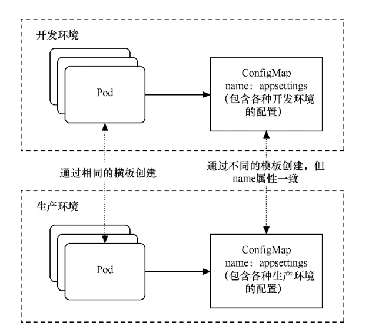

Contents
配置存储卷¶
Kubernetes还拥有一些存储卷，但它们并不是用来进行容器间交互或Pod间数据共享的，而是用于向各个Pod的容器中注入配置信息 的。它们的使用方式大同小异，Pod可以通过环境变量或者存储卷访问这些配置信息。
目前这类存储卷主要分为3种。
ConfigMap：可传递普通的配置信息。
Secret：可传递敏感的、加密的配置信息。
DownwardAPI：可传递Pod和容器自身的运行信息。
1. ConfigMap¶
在企业运营中，一般都会有多个部署环境，如开发环境、测试环境、预发布环境、生产环境等，这几种环境的配置也各有不同。如果 在Pod模板中直接配置，会发现管理非常困难，每个环境都要准备不同的模板。
利用 ConfigMap 可以解耦部署与配置之间的关系，只需要在各个环境的机器上预先完成不同的配置即可，也就是配置ConfigMap。
而对于同一个应用部署，Pod模板无须变化，只要将明文编写的配置设置为对ConfigMap的引用，就可以降低环境管理和部署的复杂度，
利用ConfigMap解耦部署与配置间的关系 如图所示
1.1 ConfigMap创建¶
1. 从key-value字符串创建¶
$ kubectl create configmap special-config --from-literal=special.how=very
configmap "special-config" created
$ kubectl get configmap special-config -o go-template='{{.data}}'
map[special.how:very]
2. 从env文件创建¶
$ echo -e "a=b\nc=d" | tee config.env
a=b
c=d
$ kubectl create configmap special-config --from-env-file=config.env
configmap "special-config" created
$ kubectl get configmap special-config -o go-template='{{.data}}'
map[a:b c:d]
3. 从目录创建¶
$ mkdir config
$ echo a>config/a
$ echo b>config/b
$ kubectl create configmap special-config --from-file=config/
configmap "special-config" created
$ kubectl get configmap special-config -o go-template='{{.data}}'
map[a:a
b:b
]
kubernetes的configmap格式错乱问题json/yaml格式化
备忘configmap格式化
#kubectl create cm node-local-dns --from-file Corefile
kubectl get cm node-local-dns -o json | jq '.data.Corefile' -r
# 使用以下方法删除尾随空格
sed -i -E 's/[[:space:]]+$//g' file.txt
# 使用空格替换制表符
sed -i 's/\t/ /g' file.txt
4. 从文件Yaml/Json 文件创建¶
apiVersion: v1
kind: ConfigMap
metadata:
name: special-config
namespace: default
data:
special.how: very
special.type: charm
$ kubectl create -f config.yaml
configmap "special-config" created
ConfigMap主要是以键值对的方式来存储配置信息的。首先，创建一个ConfigMap。和之前一样，通过以下命令创建模板 文件。
exampleconfigmap.yml
kind: ConfigMap
apiVersion: v1
metadata:
name: exampleconfigmap
data:
exampleHostName: www.testk8s.com
exampleBusinessMode: exampleMode
运行以下命令，通过模板创建ConfigMap。
$ kubectl apply -f exampleconfigmap.yml
创建完成后，可以通过$ kubectl get configmap命令来查看创建情况
$ kubectl get cm
NAME DATA AGE
exampleconfigmap 2 83s
查看ConfigMap的详情。
$ kubectl describe cm exampleconfigmap
Name: exampleconfigmap
Namespace: default
Labels: <none>
Annotations: <none>
Data
====
exampleBusinessMode:
----
exampleMode
exampleHostName:
----
www.testk8s.com
Events: <none>
ConfigMap创建完成后就可以在Pod中引用了。接下来分别介绍ConfigMap的两种引用方式。
1.2 ConfigMap使用¶
1. 环境变量引用方式¶
examplepodforenvconfig.yml
apiVersion: v1
kind: Pod
metadata:
name: examplepodforenvconfig
spec:
containers:
- name: containerforenv
image: busybox
imagePullPolicy: IfNotPresent
command: ['sh','-c']
args: ['echo "EnvParaHostName: ${EnvParaHostName} EnvParaBusinessMode: ${EnvParaBusinessMode}"; printenv | grep EnvPara; sleep 3600']
env:
- name: EnvParaHostName
valueFrom:
configMapKeyRef:
name: exampleconfigmap
key: exampleHostName
- name: EnvParaBusinessMode
valueFrom:
configMapKeyRef:
name: exampleconfigmap
key: exampleBusinessMode
通过valueFrom、configMapKeyRef、name、key等属性，我们可以指定具体要引用哪些环境变量。
在 env 属性中，我们先定义了环境变量的名称（在本例中分别为EnvParaHostName和EnvParaBusinessMode）。
和之前引用环境变量的不同之处在于，这里使用valueFrom属性来定义，表示环境变量的值来自外部引用， 关键字configMapKeyRef表示从ConfigMap中引用； configMapKeyRef.name属性表示要引用的ConfigMap的名称；而configMapKeyRef.key表示要引用的键值对的键名，它的值会映射 到环境变量上。这里我们使用之前创建的两个键值对。
在容器的命令参数中，我们会先通过命令行参数直接输出定义的参数，然后通过$ printenv | grep EnvPara命令输出Pod中包含 “EnvPara”字符串的环境变量（因为其他环境变量较多，所以通过grep来筛选），查看定义的参数是否已注入Pod的环境变量中。
运行以下命令，通过模板创建Pod。
$ kubectl apply -f examplepodforenvconfig.yml
创建完成后，通过$ kubectl logs examplepodforenvconfig命令可以查看Pod输出的信息
$ kubectl logs pod/examplepodforenvconfig
EnvParaHostName: www.testk8s.com EnvParaBusinessMode: exampleMode
EnvParaHostName=www.testk8s.com
EnvParaBusinessMode=exampleMode
环境变量已经成功引用ConfigMap中设置的值。
有些时候，ConfigMap中设置的键值对可能会非常多，一个个配置到Pod模板中会相当麻烦。
Kubernetes还提供了一种简易的方式，即将ConfigMap中的所有键值对直接配置到Pod中。
examplepodforenvconfigv2.yml
apiVersion: v1
kind: Pod
metadata:
name: examplepodforenvconfigv2
spec:
containers:
- name: containerforenv
image: busybox
imagePullPolicy: IfNotPresent
command: ['sh','-c']
args: ['printenv | grep example; sleep 3600']
envFrom:
- configMapRef:
name: exampleconfigmap
本例中直接使用envFrom属性，表示整个环境变量都是从外部文件引用的；引用方式为configMapRef，表示从ConfigMap中引用； configMapRef.name属性表示ConfigMap的名称。
接下来，利用容器命令参数printenv | grep example输出Pod中包含“example”字符串的环境变量（因为其他环境变量较多， 所以通过grep筛选出指定条目来查看）。
运行以下命令，通过模板创建Pod。
$ kubectl apply -f examplepodforenvconfigv2.yml
创建完成后，可以查看Pod输出的信息
$ kubectl logs pod/examplepodforenvconfigv2
HOSTNAME=examplepodforenvconfigv2
exampleHostName=www.testk8s.com
exampleBusinessMode=exampleMode
2. 存储卷引用方式¶
因为ConfigMap本身是一种特殊的存储卷，所以也可以通过存储卷方式配置到Pod中。不同于环境变量的引用方式，这种引用方式会将每 个键值对都转换成对应的实体文件。
examplepodforvolumeconfig.yml
apiVersion: v1
kind: Pod
metadata:
name: examplepodforvolumeconfig
spec:
containers:
- name: containerforvolume
image: busybox
imagePullPolicy: IfNotPresent
command: ['sh','-c']
args: ['echo "files:"; ls /config/allvalues; sleep 3600']
volumeMounts:
- name: volumeconfig
mountPath: /config/allvalues
volumes:
- name: volumeconfig
configMap:
name: exampleconfigmap
本例中创建的存储卷名称为volumeconfig，这个名称会被容器设置中的数据卷引用。存储卷的类型是configMap，其name属性为 exampleconfigmap，引用之前我们创建的ConfigMap。
本例中创建的名为containerforvolume容器会引用volumeconfig存储卷，并将其映射到容器的/config/allvalues目录下，然后通过ls 命令，输出/config/allvalues目录下的所有文件。
运行以下命令，通过模板创建Pod。
$ kubectl apply -f examplepodforvolumeconfig.yml
在容器的/config/allvalues 目录下，分别有名为exampleBusinessMode和exampleHostName的两个文件，它们分别对应 ConfigMap中的两个键值对。
$ kubectl logs pod/examplepodforvolumeconfig
files:
exampleBusinessMode
exampleHostName
通过$ kubectl exec -ti examplepodforvolumeconfig -- /bin/sh命令进入Pod内部，然后分别输出这两个文件的内容（分
别通过cat /config/allvalues/exampleBusinessMode和cat /config/allvalues/exampleHostName命令），可以看到这两
个文件中的内容正是ConfigMap中各个键对应的实际值
$ kubectl exec -it pod/examplepodforvolumeconfig -- /bin/sh
/ # cat config/allvalues/exampleBusinessMode
exampleMode/ #
/ # cat config/allvalues/exampleHostName
www.testk8s.com/ #
1.3 参考文献¶
Kubernetes资源管理ConfigMap
2. Secret¶
如果说 ConfigMap 用于传递普通的配置信息，那么 Secret 则用于传递敏感的、加密的配置信息，例如，用户名和密码等敏感信息。
话虽如此，实际上Secret的安全性并不高，因为它本质上通过base64格式对信息进行编码，连加密都算不上，这些编码后的信息只 需要解码就可以变回原始值。对于重要信息，建议采用其他自定义方式进行加密并在Pod中按自定义算法进行解密。
Secret主要有3种类型。
OpaqueSecret：使用base64编码格式，用来存储密码、密钥等。
ImagePullSecret：用来存储私有Docker Registry的认证信息。
ServiceAccountSecret：主要用来访问Kubernetes API。它会被ServiceAccount引用。在 ServiceAccount 创建时，Kubernetes 会默认创建对应的 Secret。Pod 如果使用了ServiceAccount，则对应的Secret会自动挂载到Pod的/run/secrets/Kubernetes.io/ serviceaccount目录下，后续章节会详述这种Secret。
接下来将主要介绍OpaqueSecret和ImagePullSecret的基本使用方式。
2.1 OpaqueSecret¶
OpaqueSecret完全就是ConfigMap的翻版，它们的定义方式和使用方式类似，都是使用键值对形式，但区别在于，OpaqueSecret中各个键对应的值必须通过base64进行编码才能配置。
现在创建一个OpaqueSecret。假设我们要用OpaqueSecret来存储自定义的用户名和密码，在本例中用户名为superuser，密码为 abc12345。首先，需要对用户名和密码进行base64编码。
需要执行的命令如下。
$ echo -n "superuser" | base64
c3VwZXJ1c2Vy
$ echo -n "abc123456" | base64
YWJjMTIzNDU2
用户名和密码的base64编码结果已经产生，现在先记录这些编码后的值，稍后将这些值配置到Secret中。
创建模板文件examplesecret.yml
apiVersion: v1
kind: Secret
metadata:
name: examplesecret
type: Opaque
data:
exampleusername: c3VwZXJ1c2Vy
examplepassword: YWJjMTIzNDU=
运行以下命令，通过模板创建ConfigMap。
$ kubectl apply -f examplesecret.yml
创建完成后，查看创建情况
$ kubectl get secret
NAME TYPE DATA AGE
examplesecret Opaque 2 32s
也可以通过以下命令查看Secret的详情，具体命令如下。
$ kubectl describe secret/examplesecret
Name: examplesecret
Namespace: default
Labels: <none>
Annotations: <none>
Type: Opaque
Data
====
examplepassword: 8 bytes
exampleusername: 9 bytes
执行$ kubectl get secret examplesecret -o yaml命令，将会以yaml格式输出这个Secret的信息，输出的信息中已显示出所配置的键值对。
$ kubectl get secret examplesecret -o yaml
apiVersion: v1
data:
examplepassword: YWJjMTIzNDU=
exampleusername: c3VwZXJ1c2Vy
kind: Secret
metadata:
name: examplesecret
namespace: default
type: Opaque
从这里就可以看出，Secret其实一点都不安全，很轻松就可以获取配置值，只要稍微解码就可以得到原始值。在本例中，解码命令为
$ echo "c3VwZXJ1c2Vy"| base64 --decode
superuser
Secret创建完成后就可以在Pod中引用了。Secret和ConfigMap的引用方式大同小异。接下来分别介绍Secret的两种引用方式。
1.环境变量引用方式¶
examplepodforenvsecret.yml
apiVersion: v1
kind: Pod
metadata:
name: examplepodforenvsecret
spec:
containers:
- name: containerforenv
image: busybox
imagePullPolicy: IfNotPresent
command: ['sh','-c']
args: ['echo "EnvParaUserName: ${EnvParaUserName} EnvParaPassword: ${EnvParaPassword}"; printenv | grep EnvPara; sleep 3600']
env:
- name: EnvParaUserName
valueFrom:
secretKeyRef:
name: examplesecret
key: exampleusername
- name: EnvParaPassword
valueFrom:
secretKeyRef:
name: examplesecret
key: examplepassword
$ kubectl apply -f examplepodforenvsecret.yml
创建完成后，可以查看Pod输出的信息,环境变量已经成功引用了Secret中设置的值，且这些值已经解码成明文。
$ kubectl logs pod/examplepodforenvsecret
EnvParaUserName: superuser EnvParaPassword: abc12345
EnvParaUserName=superuser
EnvParaPassword=abc12345
和ConfigMap一样，Secret中设置的键值对可能会非常多，一个个配置到Pod模板中会非常麻烦。
Kubernetes提供了一种简易方式，用于将Secret中的所有键值对直接配置到Pod中。
为了使用示例来介绍直接引用Secret整个文件的方法，首先，定义模板文件，创建一个名为examplepodforenvsecretv2.yml的模板文
件。
apiVersion: v1
kind: Pod
metadata:
name: examplepodforenvsecretv2
spec:
containers:
- name: containerforenv
image: busybox
imagePullPolicy: IfNotPresent
command: ['sh','-c']
args: ['printenv | grep example; sleep 3600']
envFrom:
- secretRef:
name: examplesecret
本例中直接使用envFrom属性，表示整个环境变量都是从外部文件引用的；引用方式为secretRef，表示从Secret中引用；
secretRef.name属性表示Secret的名称。接下来，通过容器命令参数printenv | grep example输出Pod中包含“example”字符串的环境变量。
模板创建Pod
$ kubectl apply -f examplepodforenvsecretv2.yml
建完成后，可以查看Pod输出的信息。可以看到Secret中的所有键值对都已经按环境变量的方式配置到Pod当中，且这些值已经解码成明文。
$ kubectl logs pod/examplepodforenvsecretv2
HOSTNAME=examplepodforenvsecretv2
examplepassword=abc12345
exampleusername=superuser
2.存储卷引用方式¶
因为Secret本身是一种特殊的存储卷，所以也可以通过存储卷方式配置到Pod中。
不同于环境变量的引用方式，这种引用方式会将每个键值对都转换成对应的实体文件。
为了通过存储卷方式引用
Secret，首先，定义模板文件，创建一个名为examplepodforvolumesecret.yml的模板文件。
apiVersion: v1
kind: Pod
metadata:
name: examplepodforvolumesecret
spec:
containers:
- name: containerforvolume
image: busybox
imagePullPolicy: IfNotPresent
command: ['sh','-c']
args: ['echo "files:"; ls /secret/allvalues; sleep 3600']
volumeMounts:
- name: volumesecret
mountPath: /secret/allvalues
volumes:
- name: volumesecret
secret:
secretName: examplesecret
本例中创建的存储卷名称为volumesecret，这个名称会被容器设置中的数据卷引用。存储卷的类型是Secret，其name属性为 examplesecret，即引用之前我们创建的Secret。
$ kubectl apply -f examplepodforvolumesecret.yml
例中创建的名为containerforvolume的容器会引用volumesecret存储卷，并将其映射到容器的/secret/allvalues目 录下，然后通过ls命令，输出/secret/allvalues目录下的所有文件。
通过$ kubectl exec -ti examplepodforvolumesecret -- /bin/sh命令进入Pod内部，然后分别输出这两个文件的内容
$ kubectl exec -ti examplepodforvolumesecret -- /bin/sh
/ # cat secret/allvalues/exampleusername
superuser/ #
/ # cat secret/allvalues/examplepassword
abc12345/ #
可以看到这两个文件的内容正是Secret中各个键对应的实际值，且这些值已经解码成明文。
2.2 ImagePullSecret¶
ImagePullSecret主要用来存储私有Docker Registry的认证信息。在设置Pod模板时，如果需要从私有仓库中拉取镜像，可以设置imagePullSecrets属性为此类型的Secret，以作为仓库的登录密钥。
可以直接使用$ kubectl create secret命令来创建ImagePullSecret。具体命令如下所示。
$ kubectl create secret docker-registry myregistrykey --docker-server=DOCKER_REGISTRY_SERVER --docker-username=DOCKER_USER --docker-password=DOCKER_PASSWORD --docker-email=DOCKER_EMAIL
本例中创建了一个名为myregistrykey的Secret。注意，这里需要将命令中的DOCKER_ REGISTRY_SERVER、DOCKER_USER、DOCKER_PASSWORD、DOCKER_EMAIL替换为对应环境中的值。
也可以通过直接读取.dockercfg中的内容来创建Secret，具体命令如下所示。
$ kubectl create secret docker-registry myregistrykey --from-file="~/.dockercfg"
Secret创建后，可以通过$ kubectl describe secretmyregistrykey命令查询具体信息。
可以看到Secret中有一个名为.dockerconfigjson的键值对。
执行$ kubectl get secret myregistrykey -o yaml命令，将会以yaml格式输出这个Secret的具体信息。
$ kubectl get secret registry-pull-secret -n ci-gitee-10523 -o yaml
apiVersion: v1
data:
.dockerconfigjson: eyJhdXRocyI6IHsiaHViLmdpdGVlLmNjIjogeyJhdXRoIjogIloybDBaV1U2VDNOamFHbHVZVEV5TXc9PSJ9fX0=
kind: Secret
metadata:
labels:
app.kubernetes.io/managed-by: Helm
name: registry-pull-secret
namespace: ci-gitee-10523
type: kubernetes.io/dockerconfigjson
在输出的信息中已显示出配置的键值对。
复制.dockerconfigjson的值，通过以下命令进行解码。
$ echo "eyJhdXRocyI6IHsiaHViLmdpdGVlLmNjIjogeyJhdXRoIjogIloybDBaV1U2VDNOamFHbHVZVEV5TXc9PSJ9fX0=" | base64 --decode
{"auths": {"hub.gitee.cc": {"auth": "Z2xxxxxxxxxxw=="}}}
解码结果如上所示，.dockerconfigjson中的内容已经以明文形式展示出来。本示例再一次证明了Secret实际上并不怎么名副其实。
Secret创建完成后就可以在Pod中引用了，将Secret名称配置到spec.imagePullSecrets属性中即可。具体代码如下所示。
apiVersion: v1
kind: Pod
metadata:
name: exampleSecret
spec:
containers:
- name: exampleContainer
image: mydocker/myapp:v1
imagePullSecrets:
- name: myregistrykey
2.3 参考文献¶
Kubernetes资源管理Secret
3.深入探究 K8S ConfigMap 和 Secret¶
4. Downward API¶
有时候，容器可能需要获得有关自身的信息，但不能与Kubernetes过于耦合。这时Downward API就派上用场了，它的主要作 用是向Pod中运行的容器暴露Pod自身的信息，Downward API允许容器在不使用Kubernetes客户端或API Server的情况下获取有关自身或集群的信息。
在目前版本中，通过Downward API可以获取大量信息。
下面列出可以同时通过环境变量或存储卷获得的信息。
使用fieldRef属性可获取的信息如下。
metadata.name：Pod的名称。
metadata.namespace：Pod的命名空间。
metadata.uid：Pod的UID。
metadata.labels[‘{KEY}’]：Pod标签{KEY}的值（例如metadata. labels [‘mylabel’]）。
metadata.annotations[‘{KEY}’]：Pod注解{KEY}的值（例如metadata. annotations[‘myannotation’]）。
使用resourceFieldRef属性可获取的信息如下。
如果没有为容器指定CPU和内存限制，则Downward API获取节点上CPU和内存默认的可分配值。
limits.cpu：容器的CPU限制。
requests.cpu：容器的CPU请求。
limits.memory：容器的内存限制。
requests.memory：容器的内存请求。
limits.ephemeral-storage：容器的临时存储限制。
requests.ephemeral-storage：容器的临时存储请求。
以下信息可通过fieldRef属性批量获取。
metadata.labels：所有的 Pod 标签，格式为 label-key=“escaped-label- value”，每行一个标签。
metadata.annotations：所有的Pod注解，格式为annotation-key= “escaped- annotation-value”，每行一个注解。
只能通过环境变量获得的信息如下。
status.podIP：Pod的IP地址。
spec.serviceAccountName：Pod的ServiceAccount名称。
spec.nodeName：节点的名称。
status.hostIP：节点的IP。
4.1 环境变量引用方式¶
examplepodfordownward.yml
apiVersion: v1
kind: Pod
metadata:
name: examplepodfordownward
spec:
containers:
- name: containerforenv
image: busybox
imagePullPolicy: IfNotPresent
command: ['sh','-c']
args: ['echo "EnvParaPodName: ${EnvParaPodName} EnvParaPodIP: ${EnvParaPodIP} EnvParaNodeName: ${EnvParaNodeName}"; printenv | grep EnvPara; sleep 3600']
env:
- name: EnvParaPodName
valueFrom:
fieldRef:
fieldPath: metadata.name
- name: EnvParaPodIP
valueFrom:
fieldRef:
fieldPath: status.podIP
- name: EnvParaNodeName
valueFrom:
fieldRef:
fieldPath: spec.nodeName
通过valueFrom、fieldRef、fieldPath等属性，我们可以指定具体要引用哪些环境变量。
在env属性中，我们先定义了环境变量的名称。使用valueFrom属性进行定义，以表示环境变量的值来自外部引用；
关键字fieldRef表示从Downward API中引用；fieldPath表示要引用的Downward API键值对的键名，它的值会映射 到环境变量上。这里我们分别使用metadata.name、status.podIP、spec.nodeName来获取Pod名称、Pod IP地址以及 调度到的节点名称。
在容器的命令参数中，我们先通过命令行参数直接输出定义的参数，然后通过printenv | grep EnvPara命令输出Pod中包含 “EnvPara”字符串的环境变量，查看我们定义的参数是否已注入Pod的环境变量中。
运行以下命令，通过模板创建Pod。
$ kubectl apply -f examplepodfordownward.yml
创建完成后，通过kubectl logs examplepodfordownward命令可以查看Pod输出的信息，环境变量已经成功引用Downward
API中设置的值。
$ kubectl logs pod/examplepodfordownward
EnvParaPodName: examplepodfordownward EnvParaPodIP: 10.0.37.102 EnvParaNodeName: gitee-k8s-w09
EnvParaPodName=examplepodfordownward
EnvParaPodIP=10.0.37.102
EnvParaNodeName=gitee-k8s-w09
4.2 存储卷引用方式¶
因为Downward API本身是一种特殊的存储卷，所以也可以通过存储卷方式配置到Pod中。这种引用方式会将每个键值对都转换成对应的 实体文件。
examplepodforvolumedownward.yml
apiVersion: v1
kind: Pod
metadata:
name: examplepodforvolumedownward
spec:
containers:
- name: containerforvolume
image: busybox
imagePullPolicy: IfNotPresent
command: ['sh','-c']
args: ['echo "files:"; ls /config/alldownward; sleep 3600']
volumeMounts:
- name: volumedownward
mountPath: /config/alldownward
volumes:
- name: volumedownward
downwardAPI:
items:
- path: "PodName"
fieldRef:
fieldPath: metadata.name
- path: "PodUID"
fieldRef:
fieldPath: metadata.uid
- path: "PodNameSpace"
fieldRef:
fieldPath: metadata.namespace
本例中创建的存储卷名称为volumedownward，这个名称会被容器设置中的数据卷引用。
存储卷的类型是downwardAPI，分别引用了metadata.name、metadata.uid，metadata. namespace来表 示Pod的名称、UID以及命名空间，然后分别将其重命名到指定路径的PodName、PodUID、PodNameSpace。
本例中创建的名为containerforvolume的容器会引用volumedownward存储卷，并将其映射到容器的/config/alldownward目录下，然后通过ls命令，输出/config/alldownward目录下的所有文件
$ kubectl apply -f examplepodforvolumedownward.yml
在容器的/config/alldownward目录下，分别有名为PodName、PodUID、PodNameSpace的3个文件，它们分别对应Downward API中的3个键值对。
$ kubectl logs pod/examplepodforvolumedownward
files:
PodName
PodNameSpace
PodUID
查看容器内的内容
$ kubectl exec -it pod/examplepodforvolumedownward -- /bin/sh
/ # ls /config/alldownward/
PodName PodNameSpace PodUID
/ # cat /config/alldownward/PodName
examplepodforvolumedownward/
/ # cat /config/alldownward/PodNameSpace
default/
/ # cat /config/alldownward/PodUID
309065d2-c980-4e5c-a92b-de34497ca910